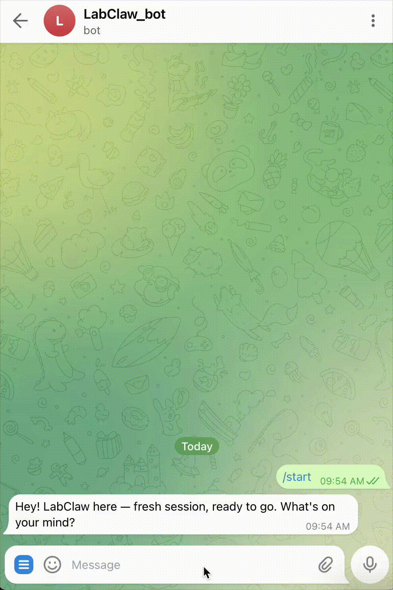

At a Glance
206
Skills
73
Biology
36
Pharma
20
Medicine
48
Data Sci
206 agentic skills spanning the full biomedical stack — from single-cell sequencing pipelines to XR-assisted surgical intelligence, each composable into autonomous research workflows.
Bioinformatics, single-cell, genomics, proteomics, multi-omics, structural biology.
Cheminformatics, molecular ML, docking, target discovery, pharmacovigilance.
Clinical trials, precision medicine, oncology, rare disease diagnosis, imaging.
Statistics, ML, data management, scientific visualization, reproducibility.
Academic search, biomedical databases, patents, grants, citation management.
Overview → When to Use → Capabilities → Examples
XR-ASSISTED BIOMEDICAL RESEARCH
Each workflow chains multiple skills into end-to-end research automation.
Just send a message to your OpenClaw agent — it will automatically fetch and install LabClaw's full skill library into your workspace.

Deploy LabClaw as a persistent autonomous agent that never sleeps. It continuously monitors instrument feeds, interprets multimodal signals, and triggers agentic responses — all without human intervention.
LIVE · Continuous Experiment Monitoring
AGENT · Autonomous Anomaly Response
AI-powered operating system for autonomous laboratory research — the runtime platform LabClaw's skill library is built to serve.
AI-XR-Cobot World Model for clinical perception and action — bridging surgical intelligence with autonomous medical reasoning.
The main runtime that loads workspace skills — the agent platform LabClaw is designed to plug into.

Contributors include:
Yingcheng Charles Wu,
Zhe Zhao,
Jinglin Jian